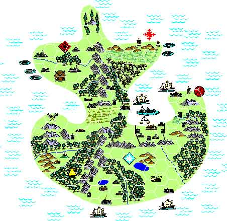
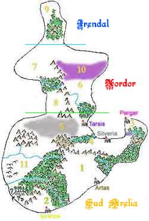

Arelia è un continente la cui dimensione totale non supera quella della Germania e della Francia messe insieme. Anche come condizioni climatiche l'ubicazione di Arelia nel pianeta dove è situata ricorda il centro Europa. Arelia è solo un continente su questo pianeta, che è chiamato GEOS ma per i popoli Areliani è l'unica terra conosciuta ed è il centro delle loro attenzioni.
Il punto più a sud situato nel Ducato di Southland potrebbe facilmente collocarsi in corrispondenza della latitudine della Liguria italiana, mentre quello più a nord rappresentato dalla penisola di Irendal è assimilabile alla latitudine della penisola scandinava.
Data la sua forma geografica e l'evoluzione storica dei popoli che hanno civilizzato questo continente, Arelia è stata divisa dai geografi in tre fondamentali macrozone. La mappa seguente a differenza di quella in apertura di pagina riporta le distanze e le forme geografiche reali.

La Penisola di Irendal : E' la macrozona più piccola situata al vertice nord di Arelia. E' una zona estremamente fredda e costantemente innevata a parte per i mesi della stagione calda. In questa zona hanno sempre vissuto popolazioni di tipo vichingo avvezze alla caccia, alla lavorazione delle pelle e allo sfruttamento delle foreste. Si tratta di una popolazione prevalentemente di guerrieri, molto forti e robusti le cui armi prevalentemente sono asce e martelli. Vivono in villaggi difesi da fortificazioni in legno anche se la loro migliore difesa contro i popoli civilizzati è l'avversità delle condizioni climatiche e della natura nella zona. La magia è estremamente rara e i chierici sono prevalentemente sciamani devoti alle Forze della Natura. Nei mesi freddi la calotta ghiacciata del Mare dei Ghiacci si unisce alle coste nord della penisola aprendo la strada per quelle che sono chiamate le Terre dei Draghi Bianchi. Dopo il crollo dell'Impero del Nordor è estremamente arduo ricevere informazioni provenienti da questa zona.
Il Nordor : Nelle vaste pianure, separate dall'imponente catena montuosa dei Monti Roam, un tempo fioriva il più grande degli imperi umani mai unificato, oggi invece vi è solo la rovina e la devastazione. Città sommerse da paludi malefiche, intere foreste morte e appassite nel giro di un lustro, rovine di antichi e potenti monasteri, orde di umanoidi sovrani incontrastati del territorio, questo è quello che rimane del Nordor. La devastazione è arrivata così velocemente che tutti i popoli civilizzati di Arelia hanno temuto di esserne coinvolti, ma fortunatamente si è arrestata ai confini sud dell'Impero nello stesso misterioso modo con cui è iniziata. Gli avventurieri dal sud vanno in cerca di enormi tesori che ancora si trovano sepolti fra le rovine imperiali, ma spesso trovano la morte in queste terre pericolosissime. Alcuni studiosi affermano che una potentissima maledizione o una congiunzione astrale negativa abbia colpito questa zona e una dimensione parallela del male si sia accostata a queste terre. Tornerà mai a fiorire la civiltà nel Nordor oppure questo è solo il preludio di quello che prima o poi toccherà a tutta Arelia ?
Il Sud-Arelia : Mentre nel Nordor fioriva una civiltà umana, in questa zona ad della catena montuosa dei monti Roar, nella zona detta dei ducati, se ne sviluppava un'altra, più piccola ma del tutto indipendente e senza contatti iniziali con quella del Nordor. Ad Est dei Roar invece fiorivano già da più di mille anni le civiltà semi-umane di elfi, nani, halfling e gnomi in uno splendido isolamento. Sulle coste al centro del Golfo della Civiltà, inoltre, una civiltà umana di razza diversa, probabilmente proveniente da un'isola remota, con una diversa cultura, storia, religione e scienza si era insidiata costruendo l'imponente Repubblica Silveriana. Oggi il Sud-Arelia con le sue mille contraddizioni e tensioni è divenuto la culla della civiltà e la speranza per i popoli civili. A seguito della caduta dell'impero Nordor quasi tutti gli Stati formarono una Confederazione del Sud-Arelia per difendersi dalla distruzione proveniente dal nord. Fu inoltre creato nominato un sovrano nel Regno di Tarsis che si fosse impegnato ad evitare l'avanzata della distruzione a sud.